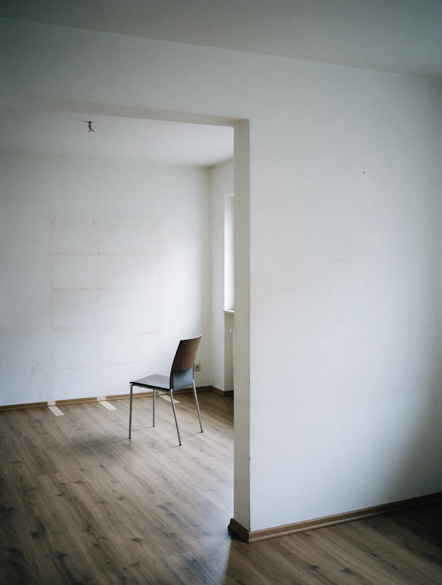
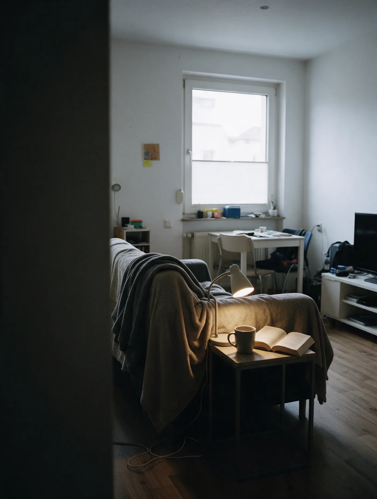
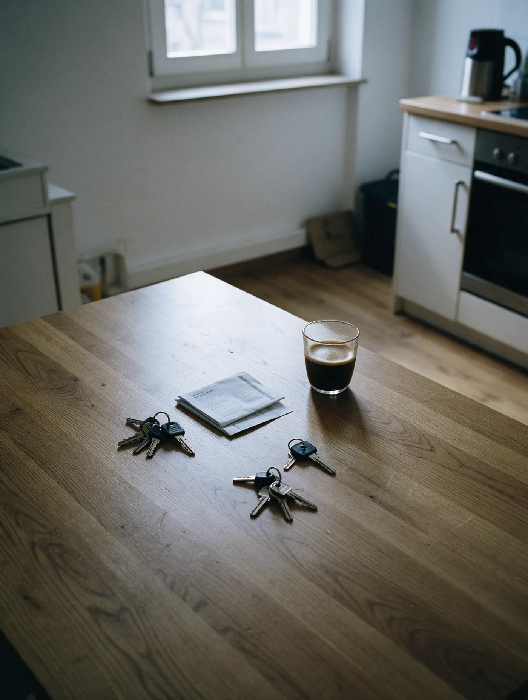
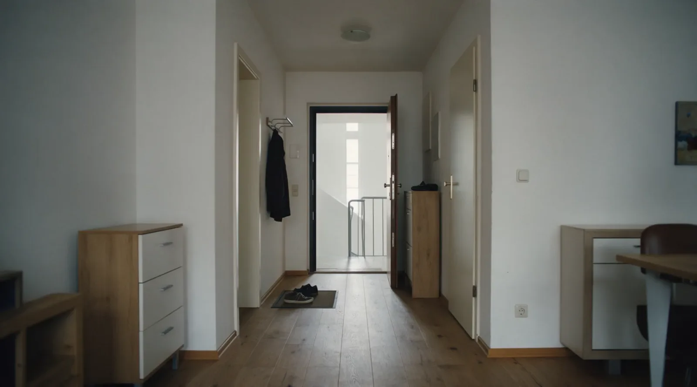

Einer ist schon ausgezogen.
Die Möbel sind weg, die Abdrücke an der Wand noch da. Die Wohnung selbst läuft weiter auf beide Namen.

Einer wohnt noch darin.
Und zahlt weiter die Rate für eine Wohnung, die beiden gehört.
Was mitgenommen wird
- Das Auto
- Die Bücher
- Der halbe Hausrat
- Das Konto
- Die Wohnung
Was bleibt
- Die Küche
- Der Hund
- Die Möbel
- Der Kredit
- Die Wohnung

Getrennt wohnen ändert nichts am Grundbuch.
Das gemeinsame Eigentum ist erst keins mehr, wenn sich beide einigen oder ein Gericht entscheidet.
Die Teilungsversteigerung ist kein Verhandlungsmittel.
Jeder Miteigentümer kann sie beantragen. Der Erlös liegt dabei meist unter dem Marktwert, und diesen Verlust tragen beide. § 180 ZVG · § 749 BGB

Ein Verkauf, den beide unterschreiben können.
Wer gemeinsam verkauft, erzielt in aller Regel mehr als bei einer Versteigerung. Und beide Seiten können mit dem Ergebnis planen.
Erstgespräch buchen 5,0 von 5 aus 50 Bewertungen auf ProvenExpert